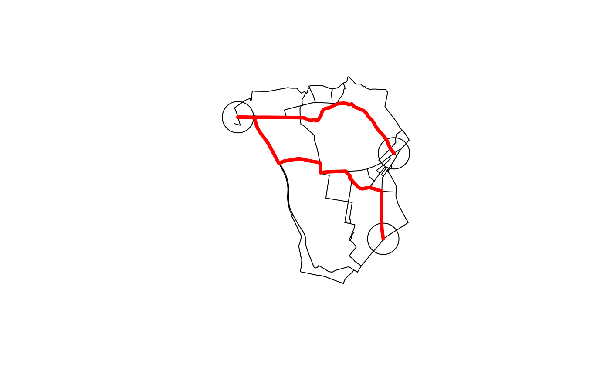
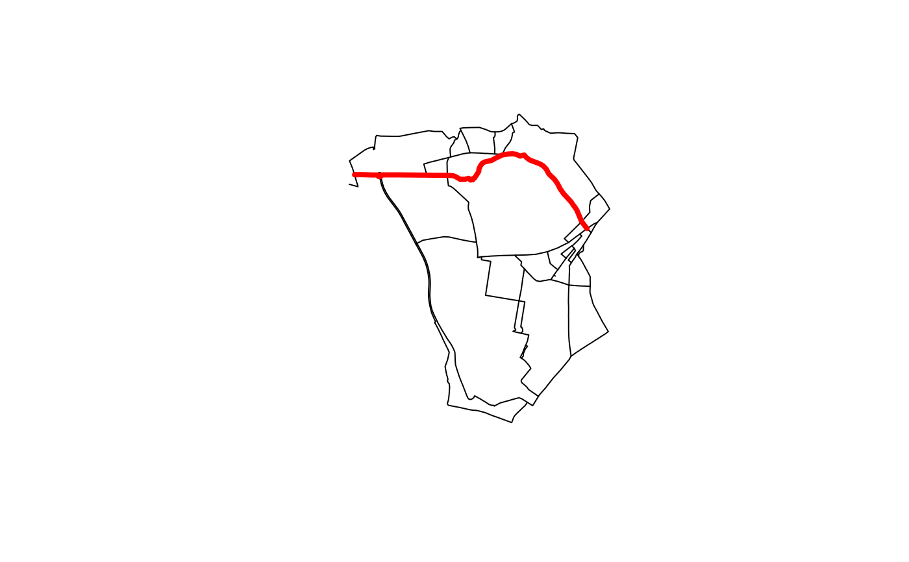

Create object of class SpatialLinesNetwork or sfNetwork
Source:R/SpatialLinesNetwork.R
SpatialLinesNetwork.RdCreates a new SpatialLinesNetwork (for SpatialLines) or sfNetwork (for sf) object that can be used for routing analysis within R.
SpatialLinesNetwork(sl, uselonglat = FALSE, tolerance = 0)
Arguments
| sl | A SpatialLines or SpatialLinesDataFrame containing the lines to use to create the network. |
|---|---|
| uselonglat | A boolean value indicating if the data should be assumed
to be using WGS84 latitude/longitude coordinates. If |
| tolerance | A numeric value indicating the tolerance (in the units of the coordinate system) to use as a tolerance with which to match nodes. |
Details
This function is used to create a new SpatialLinesNetwork from an existing SpatialLines or SpatialLinesDataFrame object. A typical use case is to represent a transport network for routing and other network analysis functions. This function and the corresponding SpatialLinesNetwork class is an implementation of the SpatialLinesNetwork developed by Edzer Pebesma and presented on RPubs. The original implementation has been rewritten to better support large (i.e., detailed city-size) networks and to provide additional methods useful for conducting transport research following on from the initial examples provided by Janoska(2013).
References
Pebesma, E. (2013). Spatial Networks, URL:http://rpubs.com/edzer/6767.
Janoska, Z. (2013). Find shortest path in spatial network, URL:http://rpubs.com/janoskaz/10396.
See also
Other rnet: calc_catchment_sum,
calc_catchment,
calc_moving_catchment,
calc_network_catchment,
find_network_nodes, gsection,
islines, lineLabels,
overline2, overline,
plot,SpatialLinesNetwork,ANY-method,
plot,sfNetwork,ANY-method,
sln2points,
sum_network_links,
sum_network_routes
Examples
#> [1] "SpatialLinesNetwork" #> attr(,"package") #> [1] "stplanr"#> [1] "length"plot(sln)shortpath <- sum_network_routes(sln, 1, 50, sumvars = "length") plot(shortpath, col = "red", lwd = 4, add = TRUE)shortpath <- sum_network_routes(sln, 1, 35, sumvars = "length") plot(shortpath, col = "red", lwd = 4, add = TRUE)library(sf)#>shortpath <- sum_network_routes(sln_sf, 1, 50, sumvars = "length") plot(shortpath$geometry, col = "red", lwd = 4, add = TRUE)